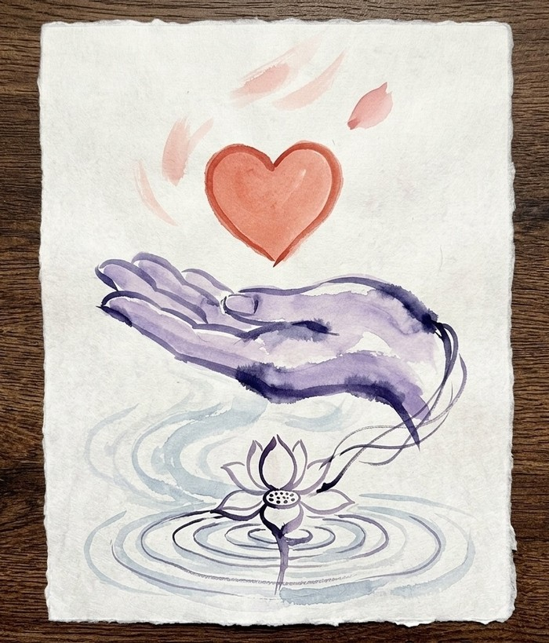

Not a charity, not a nonprofit — just an app, kept running by people who care about the problem it's solving.
We built this as a free resource for the community — no paywalls, and since we never touch or process anyone's donations, there's nothing here to charge a transaction fee on in the first place. We want it to stay that way: open, free, mutual aid in spirit.
Boost Board is built and run by a small team of volunteers with very limited resources of our own. It turns out even a free tool costs something to keep online — hosting, a domain, and the actual time it takes to review every submission by hand. We want to keep growing so we can help more people, but we need help doing it.
If you have the means, please consider supporting us. Anything helps.
Money is one option, but it's not the only one — and for a lot of people, it's not the most available one. All of these genuinely help:
It's not the donation Olympics. Every donor has their own reasons, and we appreciate and respect whatever you're able to do — whether that's signal boosting, donating, or sharing.
If you're sharing a featured campaign or the app itself on social media, a few tags that tend to reach people already inclined to help:
#BoostBoard is ours to build over time; the rest already have real, active audiences worth tapping into.
This covers hosting, moderation time, and the work of keeping the board running and reviewed every day. It does not go to any featured campaign — if you want to give to someone specific, use the "Donate to today's featured campaign" link on The Board page instead.
Support the app →Some of the people who help run Boost Board have their own fundraisers. If you're able, please consider donating here as well.
This isn't a newsletter in the usual sense — no roundups, no product updates, no drip sequence. Just one email whenever there's a new campaign at zero donations, so you can be the reason it isn't anymore. Unsubscribe any time; nothing else will ever land in that inbox.
Get notified →We're still shaping the longer-term direction of this project, and we welcome your feedback. You can reach out to us via an issue or contact form.
Right now, our focus is making the core tool work better (reviewing submissions, and making it easeful) and outreach — reaching the people and communities this is meant to help.
If you know a fundraiser that hasn't gotten traction yet — yours or someone else's, with their okay — submit it below. Every submission is reviewed by a real person before it's ever featured.
Share Your Page →